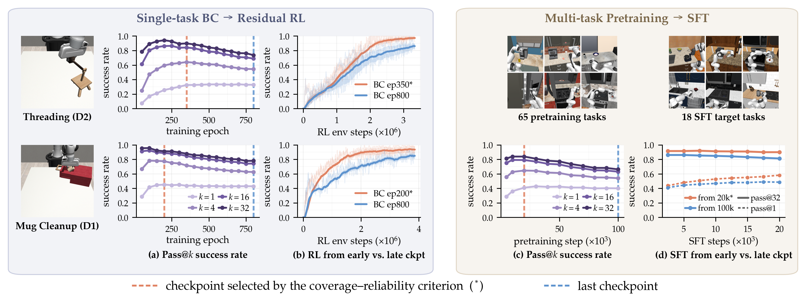
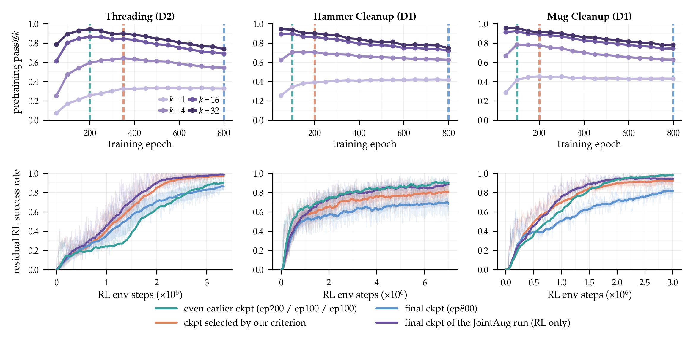
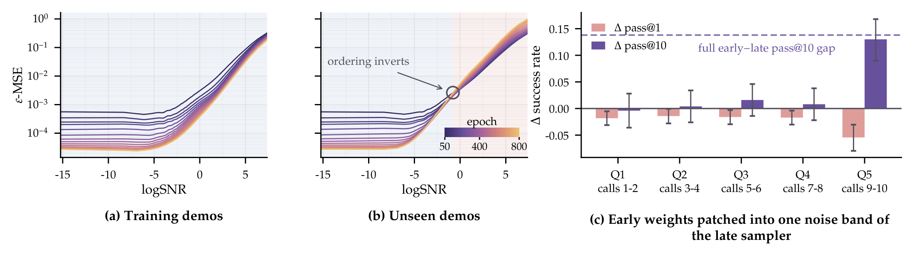
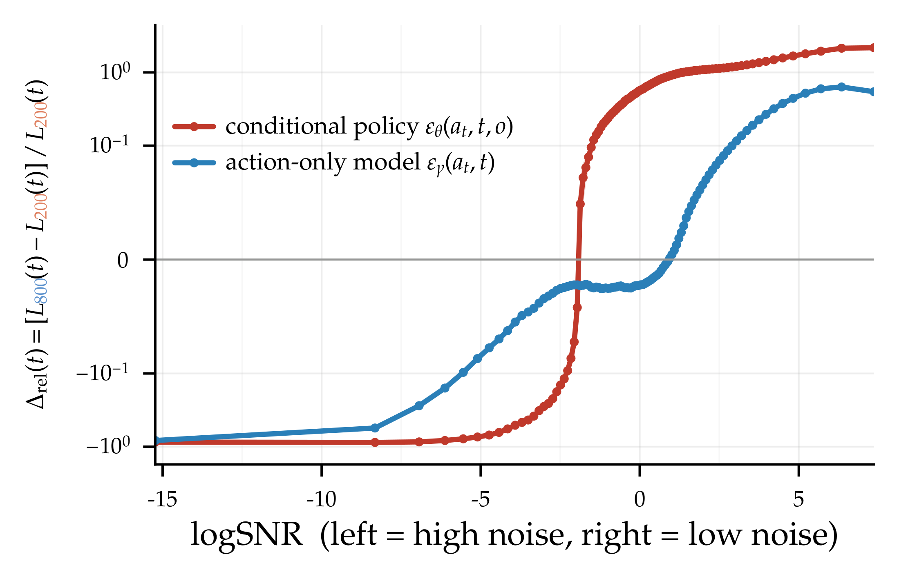
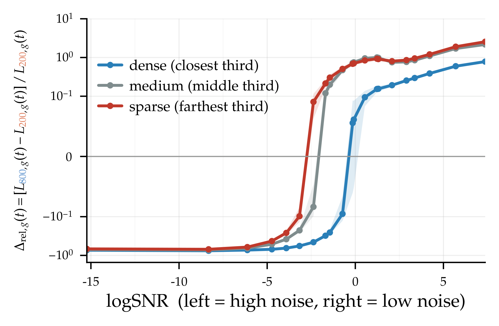
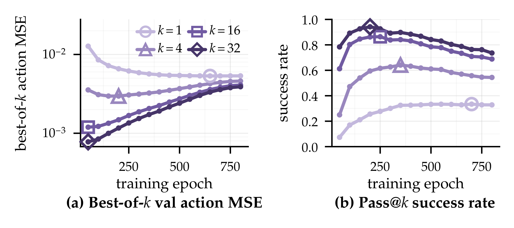
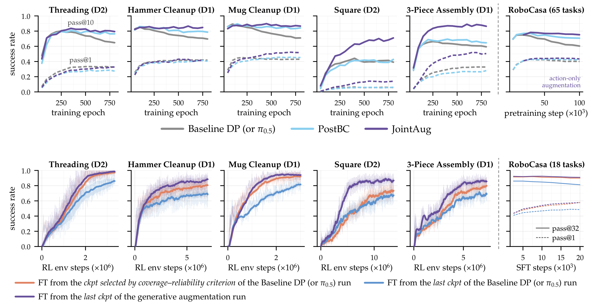
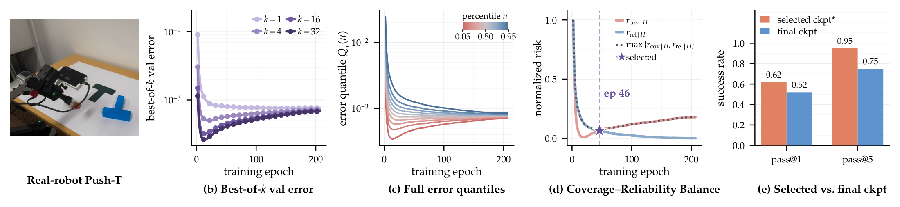

Beyond Validation Loss:Coverage and Reliability Dynamics in Robot Policy Pretraining
zhanyis@stanford.edu
Modern robot learning increasingly follows a staged process: generative robot policies are first pretrained on expert demonstrations, then improved through various forms of posttraining (e.g., reinforcement learning (RL), supervised finetuning (SFT), value-guided steering, etc.). Yet we typically select checkpoints using conventional metrics like validation loss or average task success, which evaluate pretraining in isolation without accounting for downstream posttraining. What makes a good pretrained policy, not just for direct deployment, but also for posttraining?
In this work, we use pass@$k$ to study the coverage–reliability dynamics of generative robot policies. We find that continued supervised pretraining can improve reliability at the expense of coverage, and these changes affect downstream posttraining. We then develop a purely offline criterion for selecting checkpoints that balance coverage and reliability, and introduce a generative data augmentation method that raises the coverage–reliability Pareto frontier.
Technical Summary Video
1.Does more pretraining make a policy better at everything? 🤔
We start with a simple question: does supervised pretraining improve success uniformly across initial conditions, or can improvements on some conditions come at the expense of others?
Pass@$k$ is commonly used to evaluate language models on tasks with verifiable answers, including code generation and mathematical reasoning. The idea is to generate $k$ independent solutions and ask whether any is correct. For robot policies, we do fixed-start, closed-loop pass@$k$. We choose a held-out initial task configuration, reset to it, and run $k$ independent rollouts, recording whether at least one succeeds. We then average over many starting configurations.
At $k = 1$, pass@$k$ is the usual mean task-success rate, which we refer to as reliability. Larger-$k$ pass@$k$ reflects whether success remains possible across a broad range of initial conditions, which we refer to as coverage. We note that the repeated resets are mainly a diagnostic tool in simulation, where they let us study interesting properties of the policy that average success or validation MSE doesn't reveal 🥸. In Section 4, we introduce an offline criterion for balancing coverage and reliability without any closed-loop rollouts.
We train single-task Diffusion Policies on 200 demonstrations per MimicGen task, and π0.5 on 65 RoboCasa tasks with 100 demonstrations per task. In both regimes, we observe the same pattern: pass@$1$ continues to improve, or converges, after larger-$k$ pass@$k$ has already peaked and begun to fall. The larger $k$ is, the earlier its optimum tends to occur. The result can be seen in the pretraining panels of the opening figure.
What changes? Early in training, success improves across most of the evaluation distribution. Later, the outcomes become more polarized: conditions on which the robot already succeeds become more reliable, while some harder conditions become even less likely to succeed. In the Threading task, we can see this directly by counting successes over repeated attempts at each fixed starting configuration: later in training, the fraction of configurations with zero successes rises, even as the fraction with many successes also rises. The animation below shows all 500 starting configurations, each shaded by how often its 32 attempts succeed.
Why does large-$k$ pass@$k$ start to fall earlier?
Let $q(c)$ be the probability of succeeding in one rollout from initial condition $c$. Assuming independent attempts after resetting to that condition,
$$\mathrm{pass@}k = \mathbb{E}_{c}\!\left[1-(1-q(c))^k\right].$$For $k = 1$, we are just averaging $q(c)$. For $k > 1$, the function $f_k(q)=1-(1-q)^k$ is concave, meaning that improvements on already-reliable conditions contribute less than equally sized losses on harder ones. For example, suppose continued training increases the single-rollout success probability on an easy condition from 80% to 90%, but decreases it on a hard condition from 20% to 10%. The average success rate (pass@$1$) remains unchanged at 50%, but pass@$10$ drops from roughly 95% to 83%. The gain on the easy condition barely affects pass@10, while the loss on the hard condition can reduce it. Thus, shifting success probability from harder conditions toward already-reliable ones can lower large-$k$ pass@$k$ even when average success remains unchanged or improves.
Coverage can matter for direct deployment when repeated attempts are feasible, particularly on difficult initial configurations where a policy may succeed only rarely. But it is also important for a different reason: it affects how well a policy can be improved after pretraining.
2.How policy coverage affects posttraining
Suppose two pretrained checkpoints have nearly the same pass@$1$, but one has substantially higher large-$k$ pass@$k$. Which is more useful for posttraining under fixed data or interaction budget? To investigate this, we compare the final checkpoint against an earlier checkpoint selected by our offline coverage–reliability balance criterion (introduced in Section 4). The selected checkpoint typically retains higher coverage while maintaining comparable pass@$1$. We evaluate this comparison across several posttraining methods, including those that rely on policy-generated rollouts and those that do not.
In filtered BC, we collect the same number of rollouts from each checkpoint, retain successful episodes, and use them to retrain a policy. The higher-coverage checkpoint produces successes from a wider range of initial conditions, and the retrained policies achieve higher pass@$1$ and pass@$32$. For value learning, we train separate critics on the same expert data augmented with rollouts from each checkpoint. Critics trained with higher-coverage rollouts rank candidate actions more accurately at held-out states.
Same thing happens when posttraining updates the policy. With residual RL, finetuning from the earlier checkpoint reaches higher success under the same online interaction budget. The effect is not limited to a frozen generative policy plus a learned residual correction: in experiments with full-policy RL finetuning, where the action generator is updated directly, the earlier selected checkpoint also does better on four of five tasks. Check out the paper for comprehensive results!
Perhaps somewhat more surprisingly, the finding also appears when posttraining does not collect new rollouts from the pretrained policy. On RoboCasa, we finetune earlier and final π0.5 pretraining checkpoints on the same SFT data. The earlier checkpoint, which retains higher large-$k$ pass@$k$ at similar pass@$1$, produces stronger finetuned performance. So the effect is not just that one policy happens to collect more interesting online data.
Connection to LLMs?
In LLMs, researchers have shown that better performance before posttraining does not necessarily translate to better performance afterward. Springer et al. [1] find that longer pretraining can improve a language model's performance before finetuning while hurting its performance after finetuning. Chen et al.'s Coverage Principle [2] provides a theoretical account of why coverage (the probability mass assigned to high-quality responses) matters for subsequent posttraining and best-of-$N$ sampling. More directly, Kang et al. [3] show that higher pass@$1$ after SFT does not reliably predict better performance after RL on mathematical reasoning tasks, whereas large-$k$ pass@$k$ is a stronger predictor. These findings motivate us to investigate how coverage changes during robot policy pretraining and how it affects subsequent posttraining, although the underlying learning dynamics need not be the same.
Large-$k$ pass@$k$ does not universally rank checkpoints for every RL algorithm or interaction budget. A much earlier checkpoint may retain more coverage but have lower pass@$1$, so which initialization wins can depend on the available budget. Our comparisons are mostly between checkpoints with similar pass@$1$ but different coverage.
What about even earlier checkpoints?
To examine more broadly how pretraining coverage and reliability affect residual RL finetuning, we additionally finetune an even earlier checkpoint (epoch 200 / 100 / 100 for Threading / Hammer Cleanup / Mug Cleanup) that retains more coverage but has lower pass@$1$ before the converged value. Its performance relative to the later two checkpoints depends on the available online budget and the exact RL finetuning implementation: on Hammer Cleanup it is the strongest initialization throughout, on Mug Cleanup it starts slower but ends highest, and on Threading it takes longer to warm up but eventually surpasses the final checkpoint.

3.Why does coverage decline?
Finite-data overfitting in
diffusion-based policies
What causes coverage to decline during continued supervised training? The pattern suggests finite-data overfitting. Here we study where it occurs in a diffusion policy and why some initial conditions suffer more than others.
Prior work on diffusion models has shown that the empirical denoising objective admits a memorizing solution (Gu et al. [4]), and that training can exhibit different timescales, with generalization emerging early and memorization occurring much later (Bonnaire et al. [5]). Robot diffusion policies, however, are conditioned on dense visual observations, and their generated actions must support stable multi-step, closed-loop interactions with the environment.
We first test whether continued training leads policies to increasingly fit their respective training splits. We train two policies on disjoint demonstration sets and evaluate them on the same held-out observations with matched sampling noise. Their predictions initially converge, but begin to diverge later in training. Meanwhile, each policy's generated actions become increasingly biased toward its own training split, as measured by nearest-neighbor distances relative to held-out expert actions. Together, these results suggest a transition from learning shared structure to fitting the empirical training split.
We next localize overfitting across diffusion noise levels. We measure denoising error at each noise level on training and held-out demonstrations. While training error decreases at every noise level, held-out error deteriorates near the low-noise end. To test how this affects closed-loop performance, we do a denoising-step intervention: in a 10-step DDIM sampler, we replace pairs of denoising calls from the late checkpoint with the corresponding calls from an earlier checkpoint. Replacing any of the first four two-step bands has little effect, while replacing the final two calls restores most of the earlier checkpoint's pass@$10$ advantage at the expense of pass@$1$. Thus, much of the coverage–reliability difference between these checkpoints arises from the low-noise denoising steps.

Observation conditioning further exacerbates late-training overfitting. Comparing an observation-conditioned denoiser with an action-only denoiser trained on the same actions, we find that both exhibit higher held-out error near the low-noise end after continued training. However, the deterioration begins at higher noise levels and is substantially larger for the observation-conditioned model.
The effect is also more pronounced for observations with sparse training support. We estimate local training support using distances to training trajectories in simulator-state space. For observations with sparser training support, held-out denoising error begins to deteriorate at higher noise levels and increases more sharply near the low-noise end. One intuition is that low diffusion noise restricts the set of compatible training actions, while sparse observation support further limits the number of relevant examples. Combined, these leave fewer training examples compatible with both the observation and the noisy action.


4.Can we choose a better checkpoint entirely offline?
The tradeoff raises a practical question: which checkpoint should we use? Measuring pass@$k$ requires many closed-loop rollouts from the same initial conditions for every candidate checkpoint and is not feasible on a real robot. Can we select a checkpoint entirely offline?
A natural first attempt is best-of-$k$ validation action error: sample $k$ action chunks at each held-out observation and measure how close the best sample gets to the demonstrated action. This seems like an offline analogue of pass@$k$.

As with pass@$k$, best-of-$k$ validation action MSE favors earlier checkpoints at larger $k$. But it selects too early, especially at large $k$. Very early in training, a policy may already produce lucky draws of action samples close to the expert, while most of its other samples are too poor for stable closed-loop execution. Later training can improve typical action quality and closed-loop reliability, even after the quality of the best sampled action has started to get worse.
This is easiest to see in an animation of action samples at the same held-out observation. Early in training, the sample cloud is spread out: some actions land very close to the expert, but many are far away. As training continues, the cloud contracts. Its typical sample quality improves, yet its closest sample can drift farther from the expert. Looking only at the mean loses the favorable tail; looking only at the minimum ignores all the bad samples in between.
This also helps make sense of a somewhat counterintuitive feature of behavior cloning: more training can still improve task success even while some held-out losses deteriorate. “Overfitting” is not a single number that tells us everything about closed-loop behavior. Improved typical actions can help pass@$1$, while deterioration in the favorable tail can hurt coverage. Those two changes can happen at the same time.
So rather than reducing all action samples to their mean or minimum error, we look at the full distribution of held-out action errors. For a held-out pair $(o_i,a_i^\star)$ and checkpoint $\tau$, we draw $M$ action chunks $A_j\sim\pi_\tau(\cdot\mid o_i)$, let $Q_{i,\tau}(u)$ be the $u$-quantile of their errors $\{\ell(A_j,a_i^\star)\}_{j=1}^{M}$, and average over the $N$ held-out pairs: $$\bar Q_\tau(u)=\frac{1}{N}\sum_{i=1}^{N}Q_{i,\tau}(u).$$ The lower error quantiles tell us whether the policy can occasionally sample actions close to the expert, while the median and higher quantiles reflect the accuracy of its typical and less favorable samples. In our experiments, lower quantiles typically favor earlier checkpoints, while higher quantiles keep improving later.
Our offline coverage–reliability criterion turns that observation into a checkpoint-selection rule. For each error quantile, we normalize its log-MSE score across available training checkpoints, up to a training budget $H$. Raw errors at different quantiles can differ by a lot, so the normalization operation puts every quantile on a common scale, where the best checkpoint at that quantile scores 0 and the worst scores 1: $$r_{\tau\mid H}(u)=\frac{\log\bar Q_\tau(u)-\min_{s\le H}\log\bar Q_s(u)}{\max_{\tau'\le H}\log\bar Q_{\tau'}(u)-\min_{s\le H}\log\bar Q_s(u)}.$$ We average the lower half of the quantiles into a coverage score and the upper half into a reliability score: $$r_{\mathrm{cov}\mid H}(\tau)=\operatorname*{mean}_{u\in\mathcal U,\;u<0.5}r_{\tau\mid H}(u), \qquad r_{\mathrm{rel}\mid H}(\tau)=\operatorname*{mean}_{u\in\mathcal U,\;u\ge 0.5}r_{\tau\mid H}(u).$$ Then we select the checkpoint with the best worst score, one that is not especially poor on either side: $$\tau^\star_H=\arg\min_{\tau\le H}\;\max\bigl\{r_{\mathrm{cov}\mid H}(\tau),\, r_{\mathrm{rel}\mid H}(\tau)\bigr\}.$$ There is no closed-loop rollout, no need to choose a particular $k$, and no tradeoff weight to tune between coverage and reliability.
Across the evaluated MimicGen and RoboCasa settings, this simple rule selects checkpoints close to an oracle that balances the measured pass@$k$ curves. Those checkpoints also provide stronger posttraining initializations than simply taking the final supervised checkpoint. In our experiments, we split the quantile profile at the median ($u = 0.5$), which divides coverage and reliability evenly without introducing another tuned hypreparameter. This is a simple heuristic, it does not imply that coverage and reliability separate exactly at the median or that this selects the optimal checkpoint for every RL budget, but it gives us a practical way to avoid losing coverage we may need later.
5.Can we raise the coverage–reliability frontier?
Checkpoint selection can only choose among the policies produced by a given training run. Can we instead change training so that reliability improves without giving up coverage?
The overfitting experiments suggest one place to intervene: the finite demonstration dataset. Continued supervised training repeatedly returns to the same observation–action pairs, allowing the policy to fit the empirical dataset increasingly closely. Generating novel and plausible pairs could expand supervision beyond those examples 💡.
The intuition is easiest to see through Gaussian diffusion. The demonstrations sample a broader expert distribution. After adding Gaussian noise, the empirical distribution becomes a mixture of Gaussians centered on those examples. At high noise these components overlap, but near the clean end they become sharp, separated peaks. The animation illustrates the idea: new, coherent observation–action samples can help "connect" the isolated islands left by finite data, rather than repeatedly fitting only the observed pairs.
Why not simply perturb the demonstrated actions, as in PostBC [6]? First, since observation conditioning exacerbates late-training overfitting, perturbing actions at the same observations does not fully address the limited observation support. Second, such perturbations need to be scaled carefully: a new action may not be compatible with the original observation. Instead, we want to generate new observations together with compatible actions, letting their relationship be learned from the data.
This motivates JointAug. We train a separate generative model of the joint observation–action distribution and use it to sample fresh $(\tilde o,\tilde a)$ pairs. The policy then trains on an equal mixture of real and generated pairs, with the same architecture and behavior-cloning loss.
Joint generation of high-dimensional images and actions is costly at VLA scale. On RoboCasa, we therefore use a lighter action-only variant: estimate action covariance from a selected policy checkpoint and use it to perturb training actions, without tuning a separate perturbation scale.
JointAug preserves large-$k$ pass@$k$ while maintaining, and sometimes improving pass@$1$. Its final checkpoints provide stronger RL initializations than standard late pretraining. On RoboCasa, the action-only variant similarly preserves coverage and yields SFT performance comparable to finetuning from an earlier selected checkpoint.

6.Coverage–reliability dynamics on a real robot
Simulation allows precise resets and repeated trials. Does the same coverage–reliability pattern appear in policies trained from real-robot data? 🦾
We test a challenging version of Push-T. The robot has only wrist-mounted camera views for visual input, controls the end effector in full 6-DoF, and has to move the T-shaped block using non-prehensile contact. We collect 740 human demonstrations, using 680 for training and 60 for validation, and train a diffusion policy for 200 epochs.
Even without using robot rollouts to choose a checkpoint, the held-out action-error quantiles show the same split: favorable-tail quality favors an earlier checkpoint, while other parts of the error distribution improve later. Our offline criterion selects epoch 46. We then evaluate it and the final checkpoint at epoch 200 on 20 fixed starting configurations, with five attempts per configuration.
The selected checkpoint achieves 62% pass@$1$ versus 52% for the final checkpoint, and 95% pass@$5$ versus 75%. In this particular real-robot experiment, the earlier checkpoint is better on both measures, not just coverage.

7.Discussion and Future directions
One future direction is to jointly develop better data collection strategies and better pretraining methods. Demonstration datasets should have both broad coverage of task conditions and sufficient local density. Training objectives, architectures, and optimization strategies should improve reliability without sacrificing coverage or generalization. We hope this work draws more attention to how robot policies evolve throughout training, rather than focusing solely on their final performance.
Another direction is to understand more precisely how policy distributions evolve during supervised pretraining and how those changes affect subsequent posttraining. This could guide both data collection and policy optimization. Recent large-scale real-robot efforts, such as Sunday's ACT-2 [7] and Generalist's GEN-0 [8], are beginning to reveal relationships between pretraining data, offline evaluation metrics, and downstream performance. Together with our findings, these developments motivate a unified view of pretraining and posttraining: pretrained policies should be evaluated not only by their immediate performance, but also by how effectively they can be improved and adapted to new tasks, robot embodiments, sensing modalities, etc.
References
- Jacob Mitchell Springer, Sachin Goyal, Kaiyue Wen, Tanishq Kumar, Xiang Yue, Sadhika Malladi, Graham Neubig, Aditi Raghunathan. Overtrained Language Models Are Harder to Fine-Tune. ICML 2025.
- Fan Chen, Audrey Huang, Noah Golowich, Sadhika Malladi, Adam Block, Jordan Ash, Akshay Krishnamurthy, Dylan Foster. The Coverage Principle: How Pre-Training Enables Post-Training. ICLR 2026.
- Feiyang Kang, Michael Kuchnik, Karthik Padthe, Marin Vlastelica, Ruoxi Jia, Carole-Jean Wu, Newsha Ardalani. Quagmires in SFT-RL Post-Training: When High SFT Scores Mislead and What to Use Instead. ICLR 2026.
- Xiangming Gu, Chao Du, Tianyu Pang, Chongxuan Li, Min Lin, Ye Wang. On Memorization in Diffusion Models. arXiv:2310.02664, 2023.
- Tony Bonnaire, Raphaël Urfin, Giulio Biroli, Marc Mézard. Why Diffusion Models Don't Memorize: The Role of Implicit Dynamical Regularization in Training. NeurIPS 2025.
- Andrew Wagenmaker, Perry Dong, Raymond Tsao, Chelsea Finn, Sergey Levine. Posterior Behavioral Cloning: Pretraining BC Policies for Efficient RL Finetuning. arXiv:2512.16911, 2025.
- Sunday Robotics. ACT-2 Preview: Generalizing Reliability. Sunday Robotics Blog, July 2026.
- Generalist Team. GEN-0: Embodied Foundation Models That Scale with Physical Interaction. Generalist AI Blog, November 2025.